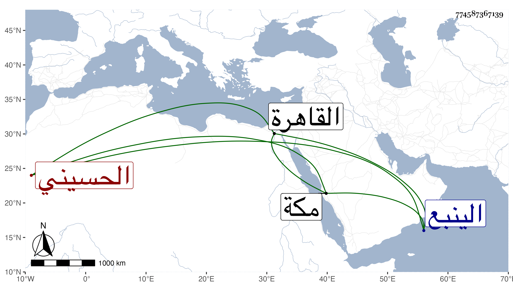

0902Sakhawi.DawLamic.ITO20230111-ara1.EIS1600.774587367139
Biography ID: 774587367139
898
هلمان بن وبير بن نخبار وقيل بميم بدل النون الحسيني صاحب الينبع وأخو سنقر الماضي ، وليها بعد عزل ابن أخيه معزى بن هجار بن وبير في سنة تسع وأربعين من القاهرة فدام حتى مات في أواخر جمادى الأولى سنة خمس وخمسين وهو في أوائل الكهولة وكان علي مذهب قومه عنده أدب وتواضع وبشاشة وكلام جلو طوالا أسمر اللون أسود اللحية صديقا للسيد بركات بن حسن صاحب مكة بحيث أن هلمان هو الساعي له في ولايته الأخيرة .
